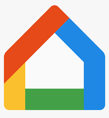

Nintendo es una compañía de videojuegos fundado por Fusajirõ Yamauchi en el año 1889. Comenzó fabricando cartas Hanafudas (cartas tradicionales de Japón). Entre 1963 y 1968 Yamauchi invirtió en varias líneas de negocio para Nintendo apartadas de su mercado tradicional y resultaron fallidas. Entre estos intentos se encuentran paquetes de arroz instantáneo, hoteles del amor y un servicio de taxis llamado Daiya. Nintendo comenzó a desarrollar consolas en el año 1977, con la Color TV-Game 15
Nintendo tiene en sus filas compañias como Retro Studios, Monolith Soft, iQue y otras más
Nintendo ha creado un total de 16 consolas y 32 variaciones de estas. En la primer foto se puede ver todas las consolas de Nintendo, junto a sus variaciones, fecha de lanzamiento y periodo de vida.

 |
|||
 |
En la segunda foto vemos la cantidad de consolas y juegos vendido por Nintendo

Nintendo es una empresa que crea videojuegos y consolas. Su primer juego fue Donkey Kong, donde apareció por primera vez Mario (en este juego Mario se llama Jumpman y en vez de ser un fontanero, es un carpintero).
Los juegos más importantes de Nintendo son: Super Mario Bros (los juegos 2D y 3D), The Legend Of Zelda, Pokemon, Kirby, Super Smash Bros, Metroid, Star Fox, F-Zero, Mother, Fire Emblem, Donkey Kong Country, etc.
Página oficial de Nintendo España| 
|

|
|

|

|

|